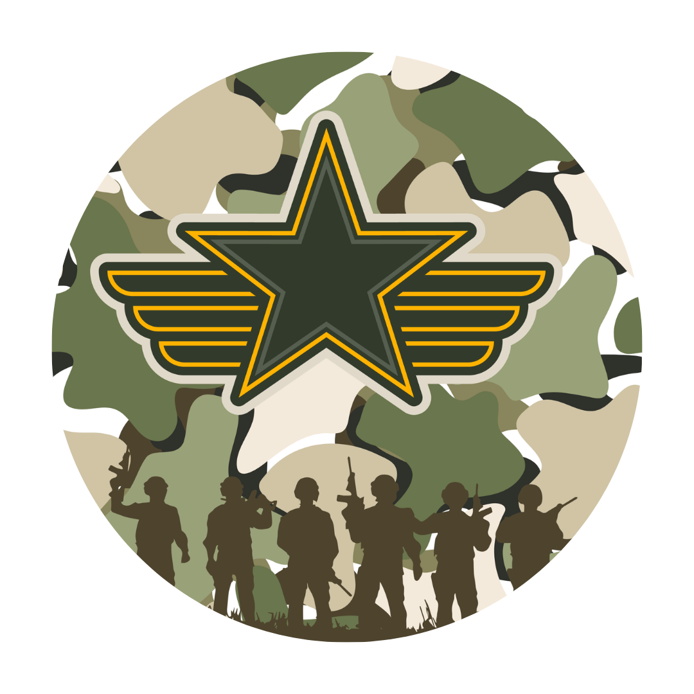
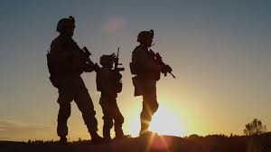
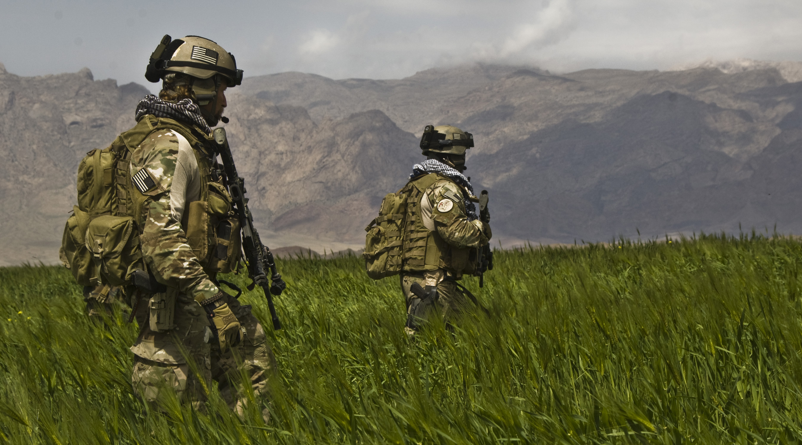
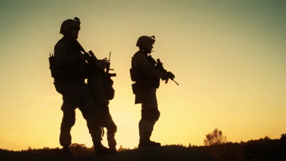

Joining the army is more than choosing a career — it is a commitment to purpose, discipline, and service. For those seeking challenge and growth, the army offers an opportunity to develop leadership skills, resilience, and a strong sense of responsibility. Every day brings new experiences that push individuals beyond their limits and help them discover strengths they never knew they had. Signing up for the army means becoming part of a team built on trust, courage, and dedication. Soldiers work together to protect their nation, support communities during times of crisis, and represent values greater than themselves. The training is demanding, but it prepares individuals to perform with confidence under pressure while building physical and mental toughness. The army also provides valuable career pathways, education opportunities, and lifelong skills that can be applied both during and after military service. From engineering and technology to medicine and logistics, there are many ways to contribute and grow professionally. Most importantly, joining the army is about making a difference. It is a chance to serve with honor, stand beside motivated individuals, and become part of something meaningful that leaves a lasting impact on both personal life and the wider community.
Press the tabs to find out more!


